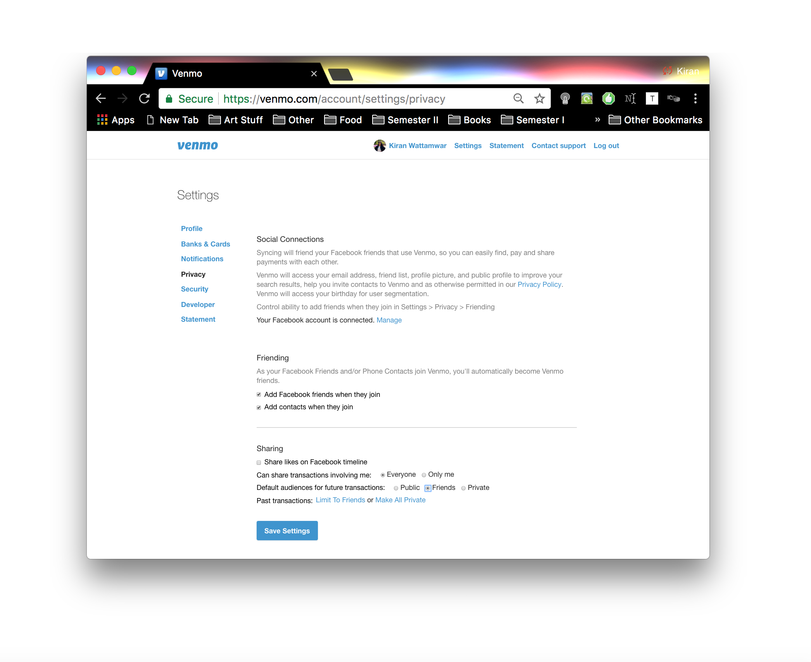

* I need to do a lot of cleaning before making this a publicly facing project, please do not share this. Though the data is public, I'd prefer not having it as exposed as it is in its current state *
What is Venmo, and why does it matter?
Venmo is a payment service platform that allows users to transfer money -
Venmo offers a convenient way of sending money online, instantly, and is
widely used in casual and commercial settings to manage payments.
While the platform does offer conveniences to users, it also brings to bear
questions on what our transactions may reveal about us. When a user submits a
transaction, it must contain a monetary value, a desciption, a target
account holder, and the option to either request or pay the target account.
About This Project
Venmo is not only a transaction platform, but also a social media platform. On its web app,
one can easily scroll through a vibrant public feed of information, with quirky payments. However,
these payments and patterns in these payments are extremely rich and can offer the potential to
make inferences on one's relationships, living situations, and location. Because Venmo payments are often
descriptive, and by default, public, it is easy to make assumptions about who one might interact with and
at what frequency, barring the text in the payment descriptions themselves. However, an analysis on this
field is even more revealing. In this project, I'm performing a shallow dive on some kinds of inferences
that can be made from payment data, without the application of Natural Language Processing or any advanced
algorithms. Even with simple filters, one can still synthesize patterns on a time and social dimension to
reconstruct social networks on a platform that intuitively does not feel like one to its users.
Venmo Data
Venmo data has varying degrees of granularity, on a temporal and social scale. Recent Venmo payment's
timestamps include a specific hour, minute and second while older payments do not. In my study
, for collected public feed transactions, each entry is labeled with an %H:%M:%S since it was collected in real time.
In my other network analyses, this data is no longer accessible. Instead, transactions are displayed with dates
(%m/%d/%Y). Additionally, payments have an actor (the source of the activity), a target, a transaction type
(pay or charge), and a description of the transaction based on user input. Finally, if you are the source or
target of a transaction, you can see the monetary value. If not, regardless of the privacy settings the user has
selected, that monetary value is not visible to others.
Time
Actor
Target
Description
Type
2017-12-07T18:09:51Z
Tara Kavanaugh
Chelsea Mackay
💦🔌🔥
payment
It is concretely worth noting that Venmo data is self-reported, and therefore not necessarily honest or accurate.
Many times, people report descriptions that are irrelevant to the payments attached. However, I have seen that
some payments are auto-generated through bill-splitting apps like Splitwise, that have default payment messages
(like "For bills on splitwise.com") that are more immune to this kind of inaccuracy. ____% of payments on Splitwise
are for rent, utilities and internet payment management between shared homes, between the age groups of ____ - ____.
While there are valuable bits of information that can be inferred from this data, it is worth exercising caution
on treating the results of this kind of analysis as any more than inference. This project is an exercise in seeing how
revealing this data could be, as a reminder to all that data in aggregate is much more powerful than the sum of its parts.
When pooling together a transaction history, and exploring the vast networks available on Venmo, combined with its
default public settings, there is potential to expose information that was no intended to be shown on this platform.
Getting Data
I set up a quick ruby script that scrapes data from Venmo's public API endpoint - you can see that endpoint for yourself
here: https://venmo.com/api/v5/public
You can see that implemented in my
Github repository if you're interested in deeper reading. Because many payments are generated constantly, I was able to amass
over 5,000 rows of information in the course of 5 minutes. For the scope of this project, I cut that down to a small sample of
approximately ~2000 to minimize visualization load time. I also built scrapers to generate datasets of the transactions of different individuals
to complete my other analyses later on in this document. Those scrapers restricted their search from now (December) to
data within 2017. I have not included those scripts in my repository - Venmo does not make this information accessible through a public
API yet, so if this is released, it should be as a tool that is restricted to aggregating only your own data for analysis and visualization.
What does public data look like?
Public Venmo data is a massive, constantly updating and rich corpus of data.
Public feed data is difficult to construct networks from alone because it is
difficult to assemble links between the payments that appear in real time. Because
of this, my analysis on public data focuses primarily on identifying the ways in which
people label their transactions. These simple patterns, barring the use of NLP, can make
a lot of progress, alone, in understanding what different Venmo transactions are for.
Even at a cursory glance, there is potential to reconstruct fantasy football leagues, housing groups,
close friend networks, attendees at birthday parties and other events (ie. large groups at restaurants), and
travel groups. Here are some examples of patterns people naturally follow:
Uber from ___ to ___Fantasy<month> Rentfor <person>'s birthday presentFor bills on Splitwise.com
Other payment management apps like Splitwise and Mint also influence these patterns - either generating descriptions
from default templates (for things like rent, utilities, etc. on Splitwise) or by encouraging users to follow
legible formatting patterns for auto-classifying payments for personal expense tracking (Mint). Mint one example of many
spending managers that work best when people label transactions with easy-to-classify descriptions. With more abstract
Venmo descriptions like unrelated emojis or intentionally misspelled words, Venmo transactions do not classify
cleanly, and prevent these services from aggregating and classifying food vs housing-related vs other kinds of expenses one
might want to see binned.
A Quick Overview of Public Data
Here's a table with the raw data I collected in span of around 5 minutes - this is here to demonstrate the sheer
volume of information available in short periods of time, and the diversity of use cases the transactions
fulfill on the platform.
Time
Actor
Target
Description
From this data, I used a few simple filters to separate the transactions into different basic categories. Hover over the circles to see the specific transaction information. These are arranged across a time axis (x-axis).
Weak Filters at a Glance
Even with this weak filtering implemented, we can separate the transactions pretty well. Some definitely slip through since this method
is not the most robust to classify payments, but getting results is extremely feasible. While these filters alone work extremely well,
there is a lot of potential on other modes of analysis that can yield even better clustering.
What does an individual's data look like?
The left shows a sankey diagram of payments to, and charges from each individual at the center of focus. These individuals have public
settings on Venmo and these transaction histories included trace back from the beginning of 2017.
When you hover over a node (colored block) in the sankey diagram,
the transactions between that person and the main case study's individual display on the right side. In the right panel,
each dot represents a transaction.
The vertical axis is time (top is most recent).
Red dots are transactions that were marked by the weak filtering that indicated a roommate/housemate relationship. Green dots are other payments that occurred between indivudals identified to live together, that we not necessarily related to housing or the filtering. Mouseover on
the transactions to see their details.
It is worth noting that you can actually see changes over time in living situations, since some transactions
only occured in specific periods of time and stopped showing on others. For some people, the recurring payments occur at a regular schedule and often
with the same descriptions.
Case 1: Mint User
Based on Vishva's data, with weak filtering, we can infer that he currently lives with: Neil ShahRoba Adnew
He used to live with: Ellina Cho
Other weak matches: Nisha Chikhale
Case 2: Mint User
Based on Christina's data, with weak filtering, we can infer that she currently lives with: Niki TubackiKiran WattamwarSarah Wright
She travelled with: Bryan CaiYasyf MohamedaliParshwa Khambhati
Other weak matches: Katherine Ho
Case 3: Misc. User
Based on Niki's data, with weak filtering, we can infer that she currently lives with: Christina SunKiran WattamwarSarah Wright
Other weak matches: Yasyf MohamedaliErica Green
Case 4: Misc. User
Based on Valerie's data, with weak filtering, we can infer that she currently lives with: Niki TubackiKiran Wattamwar
Case 5: Splitwise User
Based on Sarah's data, with weak filtering, we can infer that she currently lives with: Christina SunKiran WattamwarNiki Tubacki
She used to live with: Amanda Figueroa
Case 6: Transitioned Between Apartments
Based on Lynn's data, with weak filtering, we can infer that she currently lives with: Tara LeeE Young
She used to live with: Hannah LevyJessica LiAlexandra Ivanov
Crafting Networks
This analysis method works best, as mentioned before, on an individual's level. However, when an entity decides to explore
an individual's transactions, they might find it valuable to connect the dots between other people they see on their
Venmo feeds to construct a better image of the network. Here's a quick example of a network graph and how we can connect
the dots to reconstruct my own apartment's occupants.
By pruning the conclusions we made in the last step to only keeping nodes associated by shared housing if there are at least
two connections to other people in the same graph, we can actually get a remarkably accurate reconstruction of 3 apartments here.
For the case of two of those, we actually only have the data of one individual in that network and that is enough for total
reconstruction. For the other larger network, it takes at least 3 individual's data aggregated to form the same conclusion with
robustness. Despite not having my own account feed included, I can still construct my own relationships reliably. In practice,
since my transactions are private to me and the individual I send a payment to, a third party would not be able to achieve the
same results, however, if my settings were more open, one would not need to search for information about me to be able to still
make inferences.
More Data Analysis
There are many more advanced methods that can be applied to this data to generate more robust results. Twitter data has already
laid a strong groundwork for this kind of content - parsing the potential meanings and associations of emojis is already
present in academia, using links between text and emojis found in tweets on a large corpus of public data.
Additionally, other labs have worked on analysis of social feeds, including Facebook
and Venmo. The latter looked at clustering payments
based on the type of user (frequent, niche, occassional users, business owners), by transaction type (entertainment, food, services, etc),
and by general trends based on a temporal scale. Applying an analysis like this into the individual scale might using patterns identified
from global and personal data can paint a vivid picture of who a person might be, exclusively from their Venmo history.
I was surprised by how similar the groupings identified by much larger scale clustering and deep learning were to the
filters I generated. It seems this data is very transparent on its own, and does not need too much power for one to draw
inferences. Applying analysis can be even richer when parsing location data (Uber to and from places, travel data, restaurant names)
and temporal patterns (monthly payments, weekly payments, etc), and finally when looking at transactions of businesses that are
made public.
What can I do about this (and other privacy concerns)?
Change Your Settings
Venmo has different controls in place for managing privacy settings. If you're interested, this page
has some useful information on how to do that- for individual payments, on the payment screen, one can choose
between Public, Friends and Participants Only. While these payments may
be private, they will still show up on your own feed. Regardless of where they are posted, the monetary amounts
are not disclosed to anyone but the participants of a transaction.
Venmo also has other instructions on changing all future transactions and all past transactions. The change these payment settings,
you can access either the Web app or the mobile app. Venmo
provides
the following instructions for web:
SettingsPrivacy"Sharing""Can share transactions involving me""Only me"
SettingsPrivacy"Sharing""Default audiences for future transactions""Private"
"☰""Settings""Privacy & Sharing" (iPhone) / "Sharing" (Android)"Who Can Share Transactions Involving You"/"Transactions Involving You""Only Me"
Updating past settings is a separate process, and this can happen from the mobile app, too. However, changing your past history is
a permanent action and Venmo only supplies directions for how to complete this from iOS (does not include Android and Web in their page).
This is the flow to get there-

These were the default settings that Venmo has on an account - it's worth checking to see if you do want these settings to remain
this way or not. Today, the default settings are more private which has been slightly disruptive to Venmo's projected business model.
Who might use this information?
Here are three snippets from Venmo's privacy policy (here):
Your contact information, date of sign-up, the number of payments you have received and other verification metrics like social graph activity may be provided to users or companies when you transact with, on, or through Venmo.
Other third parties with your consent or at your direction to do so.
Service providers under contract who help with parts of our business operations (for example, fraud prevention, payment processing, or technology services); Our contracts dictate that these service providers only use your information in connection with the services they perform for us and not for their own benefit.
From this, it seems as though companies operating on Venmo can only benefit from information once you have an established history of
transactions with that company. If you have not shared your card information with them previously, they will not have access to it. Third parties
can access Venmo data but can only act on it to the extent that is required. Finally, Venmo mentions that this information can be shared
with other third parties with consent for profiteering.
Venmo's business model is generally operating at a loss for a 2.9% transaction fee, but gaining money buy allowing Vendors to onboard to their
platform to access cards and bank accounts instead of cash or other modes of payment processing. This article indicates that PayPals COO, Bill Ready
is looking for growth to come from friends sharing information about their lives - if a restaurant is advertised by a payment they received, and that
payment is made public on someone's social feed, their friends may see it and want to go too[source].
If Venmo does decide to commit to this route of growth, they may consider changing the default visibility or finding other ways to introduce
information into the activity feed, where they can make the strongest case to vendors to onboard to them.
Dialectical
When considering privacy in general, it is always worth considering how a service and how its data reach people,
and society at large. What is the value of this information, and to who? Who is this service serving? And how
will changes in this platform, and others around it shape its use of data in the future? Financial data has always
had a storied history of privacy in the US - people don't share their transaction histories or credit card bills with
others generally, but with platforms like this, it becomes second nature. Ultimately, does this all matter?
Does this matter?
Though users absolutely do have the agency to change their settings, most do not. Transactions are generated one at a time,
not all at once, and when users input data this way, it is more difficult to think about the big picture that these transactions
can aggregate to form. The composition that a Venmo transaction feed generates is a rich and revealing data story that can
prepare strong inferences for people who (1) transparently label their transactions, and/or (2) make their transactions public.
Even without descriptive transaction labels, the frequency of Venmo payments can be indicative of where people are, and who
they interact with. A mosaic of Venmo transactions together can build profiles of people who are not even the target of a
search, and the result is much greater than the sum of its parts. Check out your own Venmo feed - do you intend to share the
information that might surface when you aggregate your transactions rather than view them as insular independent events?
Would you naturally share who you live with? When a network is constructed around you, your privacy might be as vulnerable
as your network's weakest link.
Even if you are taking care of your privacy settings, platforms like Venmo are not airtight. Research from
this paper, a security analysis of Venmo, reveals that data restricted to the scope of friends may sometimes have been
publicly leaked because of Venmo's API implementation, which only depends on providing a valid payment ID, regardless of the
sharing scope attached to it. Venmo also automatically imports your Facebook friends
so even if your sharing settings are restricted, they might not be to the audience you constructed by choice when entering the
platform.
Who's data is it anyways?
Questions of how Venmo and other companies in the payments space may be affected are arising because of GDPR and
the
EU's e-commerce directive
to add stronger protections for consumers from the payments industry. As long as Venmo
continues the practice of getting informed consent for the sharing of data, and provides a way for
users to see their data and have control over it, they are compliant. Increasing consumer trust is a key point in the
directive, so if Venmo is able to aggregate consumer data for them to see, it may influence their choice in privacy settings
and how they use the platform in general. This awareness can protect people from unintended exposures of information.
[source].